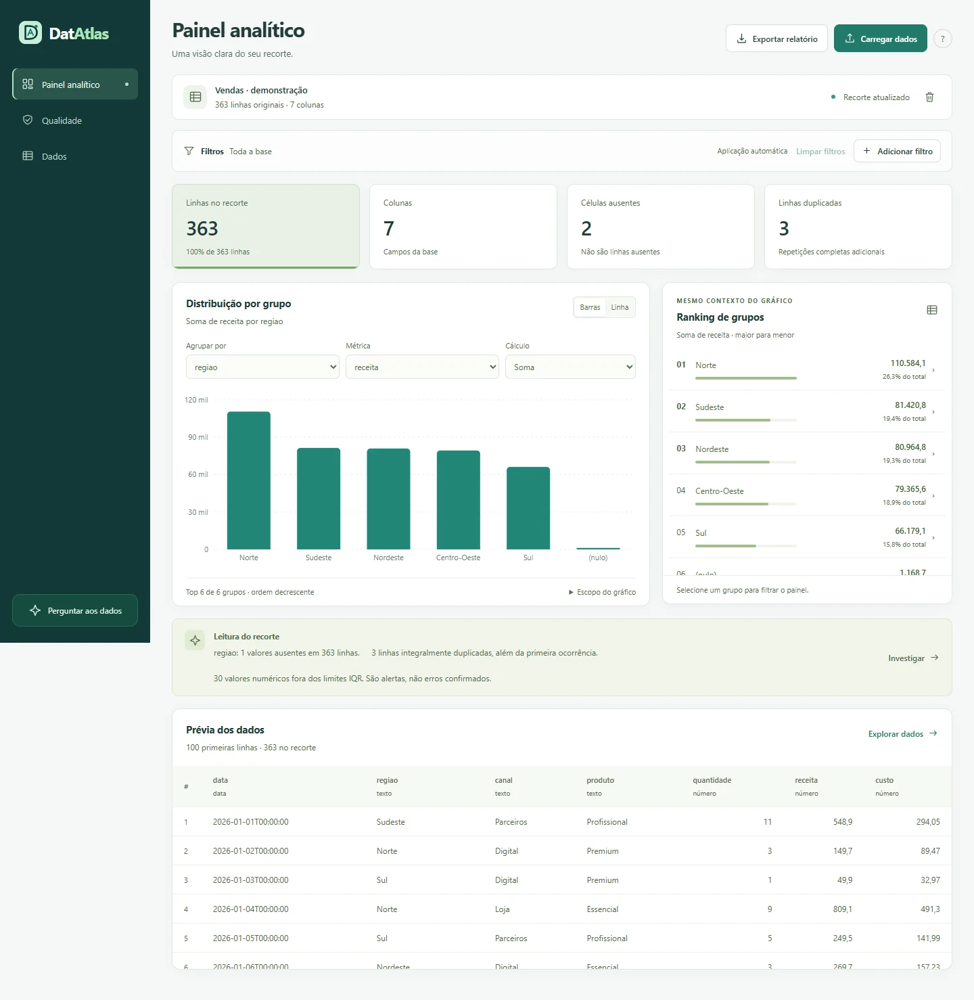
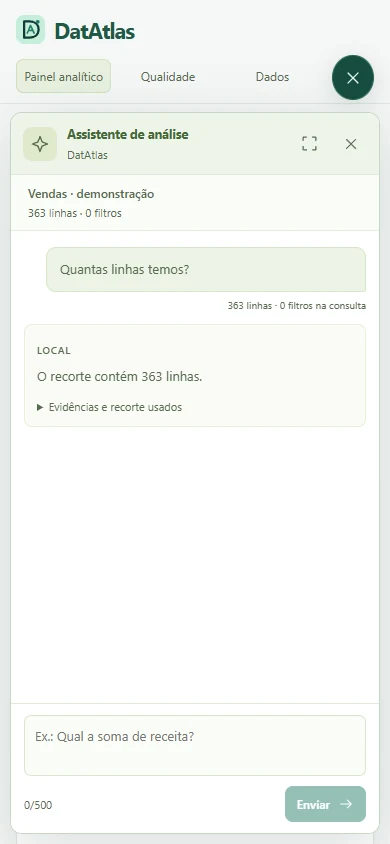

Exploratory Analysis · Data Quality · Applied AI
DatAtlas
From spreadsheets to verifiable analysis
01 / Context
The setting and the scope
In this independent study, I built an exploratory workflow to understand a spreadsheet before interpreting its totals. My work spans CSV/XLSX reading and validation, Pandas data profiling, FastAPI contracts, React visual exploration and Gemini integration. The demonstration uses 363 synthetic rows and seven columns.
02 / Problem & objective
What needed to be solved
Missing values, duplicates and extremes can change how metrics are interpreted. The workflow needed explicit scope and denominators, coordinated filters across components and natural-language questions without delegating numeric calculations to AI.
03 / Architecture & development
From source to delivery
- 01CSV/XLSX → validation
- 02Pandas → profiling & filters
- 03React → visual selection
- 04Questions + report
A simplified reading guide. Repository documentation describes contracts, sources, stages and reproduction.


04 / Challenges & decisions
Decisions behind the solution
- Missing values, duplicates, statistics and IQR alerts guide investigation; records and extreme values are not removed automatically.
- Column filters and visual selection define the scope of metrics, previews, quality, questions and reports. Charts and rankings retain context for switching between groups.
- The ranking shows up to 20 groups, but eligible shares use all groups as the denominator; averages and negative sums do not receive share percentages.
- Gemini selects only an allowed operation and column alias; the contract is validated and Pandas computes the result with scope evidence. A local fallback is available.
- HTML reports recalculate filters and selection on export. Datasets are held temporarily in memory, with session ownership checks in the public demonstration.
05 / Results & evidence
What can be reviewed
The fictional dataset contains two missing cells, three additional full-row duplicates and an extreme value of 42,000 inserted by the generator. Selecting Sul yields 68 rows and a sum of 66,179.10 in the receita column; combining Sul and the Digital channel yields 25 rows and 24,259.80. Questions and reports must reflect the same scope. These figures describe sample subsets without an assigned currency or claims about changes in business performance.
Public evidence
Actual dashboard and assistant screenshots, synthetic CSV, a sample report and a documented case study. The review dated 13 November 2026 records 49 passing Python tests and 14 local browser journeys without live Gemini.
Published-version documentation and CI checked on 14 November 2026.
Questions with evidence on mobile


Let’s connect
The next challenge
in data and business
I am exploring Data Analyst, BI Analyst and Data Scientist opportunities, as well as hybrid roles across these areas.